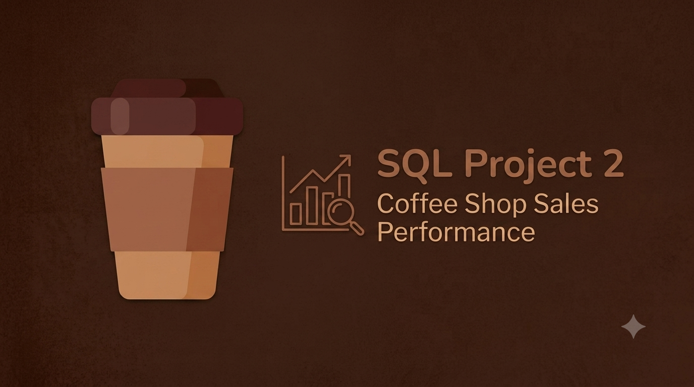

SQL Projects
SQL Portfolio
A collection of SQL case studies demonstrating data cleaning, exploratory data analysis, business intelligence, and transforming raw data into actionable business insights using Microsoft SQL Server.

Cruise Revenue Management Analysis
End-to-end SQL analysis of a cruise booking dataset using Microsoft SQL Server. This project explores booking trends, revenue performance, occupancy rates and customer satisfaction through data cleaning, exploratory analysis and business-focused SQL queries.
View Case Study
Coffee Shop Sales Analysis
End-to-end SQL analysis of a coffee shop sales dataset using Microsoft SQL Server. The project focuses on data cleaning, exploratory data analysis and business querying to uncover sales trends, product performance and customer purchasing behaviour before developing an interactive Power BI dashboard.
View Case Study